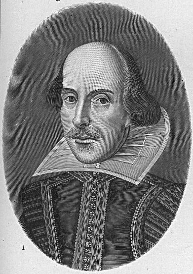

Dave's Page
Dave's Page
|  | ShakespeareWhen my son was born, I started reading the Complete Works of Shakespeare. Just before his third birthday (my son's, that is, not Shakespeare's) I finished. It was a lot of work, but tremendously rewarding. I have favourites among the plays, but there is something of value in each of them. It might be hard to see it in Titus Andronicus, but I'm glad I read even that one: it's interesting to understand the comments when others refer to this piece of bloodthirstiness. I must admit that overall I liked the plays better than the poetry, though some of the sonnets are little pieces of perfection in 14 lines. [The Complete Works I had didn't include The Two Noble Kinsmen, so eight months later I also read that. Can't leave anything out!] During my reading, I frequently made reference to MIT's wonderful searchable on-line Shakespeare, at http://shakespeare.mit.edu/. I would also love to point out an incredible Madison phenomenon called the Young Shakespeare Players. This miracle of teaching demonstrates that kids between the ages of 7 and 18 can perform uncut full-length Shakespearean plays, not only delivering the lines wonderfully, but evidently understanding them. I've watched three of their performances with my daughter, and it is amazing. One year I watched a young performer play Maria in Twelfth Night, probably my favourite of the comedies. Maria is an interesting role, a clever, witty woman who is the ringleader of a group of pranksters tormenting one of the other characters. She is also in love with Sir Toby Belch, a drunken reveler whose flaws she sees clearly, but also sees past. The young girl who played Maria in the YSP production hit her stage marks, knew her lines, and delivered them clearly. Beyond that, she stayed in character all the time, reacting to other business on stage in a natural way. Her timing was excellent and her "takes" and expressions were wonderful. You could tell that she really understood the lines she was delivering. She was eight. This is a wonderful program, and I only wish more cities had a resource like this. The kids who are lucky enough to participate in YSP are gaining confidence, theatre skills, and an appreciation for drama. They understandably become quite passionate about what they're doing. I'd love to see some effort made to capture the pedagogy Richard and Anne DePrima have created, to transfer it to others. I have never come across any people, in arts or science, more deserving of the MacArthur Fellowship than these two. |
 Home
Home